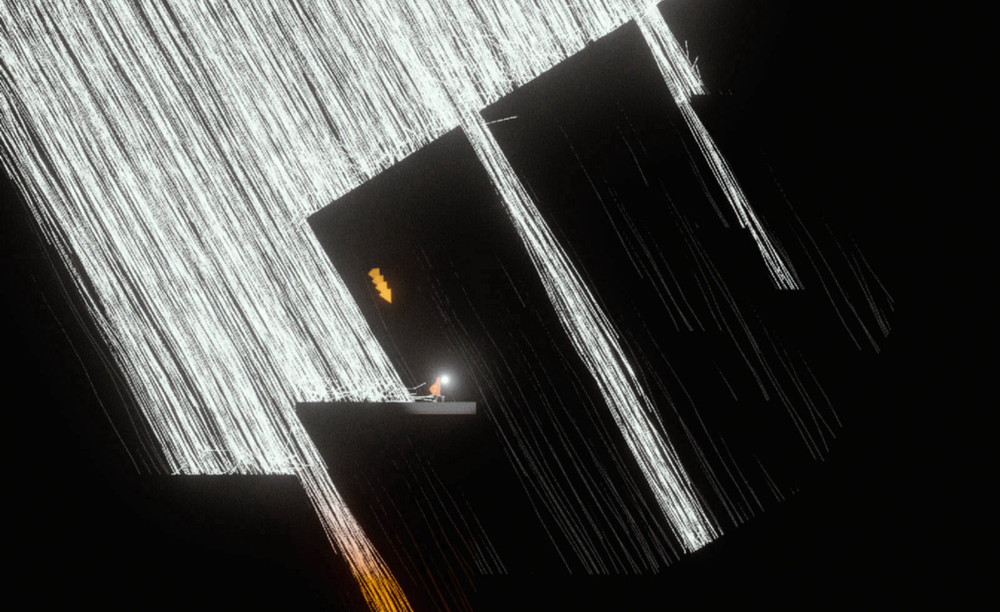
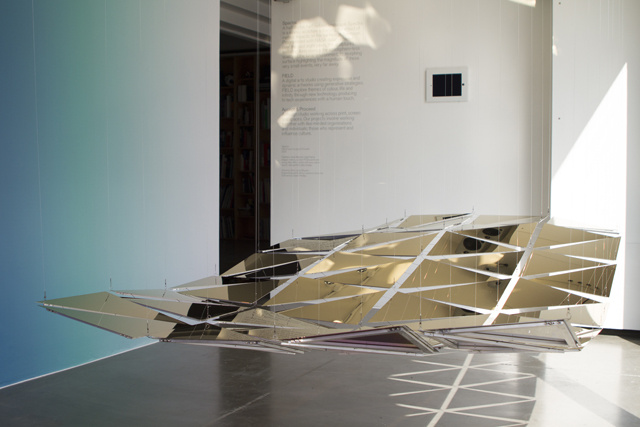
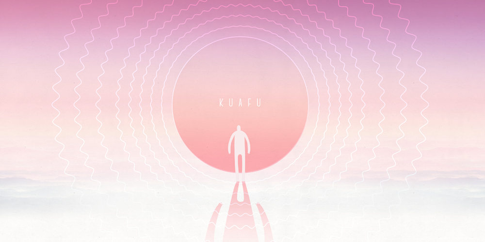

UNTITLED VR SHORT
2021-2022
Co-director, Design & VFX
Unity, Houdini
Animated VR Short x Funded by Arts Council England

This short film in VR is an spin-off project from Huldufugl and Hikapee's (equally ambitious) stage show, The Hidden People, after that project was delayed by a year due to the pandemic.
We've been collaborating with UK aerial circus company Hikapee since 2018 on a large-scale stage production - but when it became apparent that we were going to have to pause work on it for at least a year, we came up with the idea of producing an animated VR short film using the same performers, set in the same world, but with a brand new storyline.
The first step was to find a motion capture company brave enough to work with tumbling, spinning circus performers using silks, trapeze and counterbalancing equipment - a real challenge for the tracking system - and then do the entire thing on location, whilst adhering to strict COVID-19 safety measures.
We were extremely lucky to find a partner in Target3D, who sent an incredible crew to join our artists in isolation at 101 Outdoor Arts in Newbury for a week. Under Bryony from Hikapee's direction, they recorded an entire narrative of aerial circus-infused action.
We've been collaborating with UK aerial circus company Hikapee since 2018 on a large-scale stage production - but when it became apparent that we were going to have to pause work on it for at least a year, we came up with the idea of producing an animated VR short film using the same performers, set in the same world, but with a brand new storyline.
The first step was to find a motion capture company brave enough to work with tumbling, spinning circus performers using silks, trapeze and counterbalancing equipment - a real challenge for the tracking system - and then do the entire thing on location, whilst adhering to strict COVID-19 safety measures.
We were extremely lucky to find a partner in Target3D, who sent an incredible crew to join our artists in isolation at 101 Outdoor Arts in Newbury for a week. Under Bryony from Hikapee's direction, they recorded an entire narrative of aerial circus-infused action.
The film is currently under production with all the virtual sets, characters, lighting and composition currently under way.
It's a unique challenge to produce animated work for VR - where almost anything is possible in terms of angles, lighting, sound and set design. For our piece, we're taking a lot of cues from theatre over film in terms of set layout and the audience's relationship to the performers - but this still leaves us a huge possibility space to play with, which is extremely exciting!
We're also aiming for a unique art style that represents the Icelandic nature - acheived through procedural modelling in Houdini, taking the rough outlines of landscapes, and 'shredding' them into thousands of small, individually coloured polygons. This approach retains sharp edges in VR even up-close, without using textures, whilst also giving us fine control over colour, pre-baked static lighting, and vertex shader effects like wind movement in trees, water and moss.
Release is scheduled for early 2022, for Oculus Quest and other major VR platforms.
Hikapee Circus Theatre : link
Target3D : link
Aerial Performer Jen Robinson : link
Aerial Performer Katie Hardwick : link
Music & Sound by Iris Thorarins : link
It's a unique challenge to produce animated work for VR - where almost anything is possible in terms of angles, lighting, sound and set design. For our piece, we're taking a lot of cues from theatre over film in terms of set layout and the audience's relationship to the performers - but this still leaves us a huge possibility space to play with, which is extremely exciting!
We're also aiming for a unique art style that represents the Icelandic nature - acheived through procedural modelling in Houdini, taking the rough outlines of landscapes, and 'shredding' them into thousands of small, individually coloured polygons. This approach retains sharp edges in VR even up-close, without using textures, whilst also giving us fine control over colour, pre-baked static lighting, and vertex shader effects like wind movement in trees, water and moss.
Release is scheduled for early 2022, for Oculus Quest and other major VR platforms.
Hikapee Circus Theatre : link
Target3D : link
Aerial Performer Jen Robinson : link
Aerial Performer Katie Hardwick : link
Music & Sound by Iris Thorarins : link
LAMBCHILD SUPERSTAR
2017-2021
Lead Developer
Unity
VR Music Creation Experience x Oculus Studios, Within & OKGO

In 2017, my studio Horizons (along with co-founder Yuli Levtov and David Li) were approached by Chris Milk and Aaron Koblin's VR powerhouse Within to help them develop an incredibly ambitious VR project in collaboration with Oculus Studios, and the musical / creative force of OKGO.
The task was to create an experience in VR where the user could produce their very own pop song, complete with drums, bass, guitar, synth, vocals (recorded and auto-tuned by the user!) and a special cow-based freestyle solo instrument.
The final piece includes a staggering amount of layers of animation, machine learning, audio analysis and processing, a custom sound engine, hand interaction and musical theory.
Engaget Coverage :
The task was to create an experience in VR where the user could produce their very own pop song, complete with drums, bass, guitar, synth, vocals (recorded and auto-tuned by the user!) and a special cow-based freestyle solo instrument.
The final piece includes a staggering amount of layers of animation, machine learning, audio analysis and processing, a custom sound engine, hand interaction and musical theory.
Engaget Coverage :
In 2018 we were very excited to give the world a peek of the final piece, at both Tribeca Film Festival and Sonar+ in Barcelona.
Two audience members at a time, carefully guided by white-coated docents, could collaborate on building a song together in a purpose-built booth. The piece attracted a significant amount of positive attention, being described as 'Social VR's Rock Band' by Wired, and others.
My role as lead developer ranged from prototyping musical interaction concepts at the start of the project, to co-ordinating the fantastic development team across several different cities and time zones, overseeing the asset pipeline of animated creatures from the art team into Unity, and working directly on various parts of the project.
We're excited for the final public release of the project, to see the music people make in the Menagerie of the Holy Cow!
Within : link
OKGO : link
Horizons Studio: link
Oculus Studios: link
Two audience members at a time, carefully guided by white-coated docents, could collaborate on building a song together in a purpose-built booth. The piece attracted a significant amount of positive attention, being described as 'Social VR's Rock Band' by Wired, and others.
My role as lead developer ranged from prototyping musical interaction concepts at the start of the project, to co-ordinating the fantastic development team across several different cities and time zones, overseeing the asset pipeline of animated creatures from the art team into Unity, and working directly on various parts of the project.
We're excited for the final public release of the project, to see the music people make in the Menagerie of the Holy Cow!
Within : link
OKGO : link
Horizons Studio: link
Oculus Studios: link
Out Of Sync is a mad idea, an experimental performance formed in response to the
COVID-19 pandemic. So obviously in 2020 many artists across the world are unable to
perform to audiences of more than a handful of people (at best), and those countries
where audiences can gather in numbers have achieved this largely through
(sensibly) strict border restrictions, meaning they are unable to invite
international artists to come and play. In addition to this, the global climate
crisis remains – albeit backgrounded a bit by the pandemic.
The idea is that a performer in Iceland (at the time gatherings were limited to 10 people or fewer) would live-stream to a club in Taipei, Taiwan. There, a full audience of dancing people (Taiwan had no gathering restrictions at the time) would enjoy the party. However, we had two dancers, or “eyes” inside the club, using mobile phones to provide a two-way video stream back to Reykjavik, where two people at a time would experience the party on the other side of the world inside large wooden booths specially built for the purpose.
Event Production : Uta Reichardt, René Boonekamp, Aephie Chen
AR Graphics : Owen Hindley & Yuli Levtov (Volta)
Performer : Hermigervill / Sveinbjörn Thorarensen
Camera : Yuli Levtov, Uta Reichardt
Video Editing & Titles : Owen Hindley
The idea is that a performer in Iceland (at the time gatherings were limited to 10 people or fewer) would live-stream to a club in Taipei, Taiwan. There, a full audience of dancing people (Taiwan had no gathering restrictions at the time) would enjoy the party. However, we had two dancers, or “eyes” inside the club, using mobile phones to provide a two-way video stream back to Reykjavik, where two people at a time would experience the party on the other side of the world inside large wooden booths specially built for the purpose.
Event Production : Uta Reichardt, René Boonekamp, Aephie Chen
AR Graphics : Owen Hindley & Yuli Levtov (Volta)
Performer : Hermigervill / Sveinbjörn Thorarensen
Camera : Yuli Levtov, Uta Reichardt
Video Editing & Titles : Owen Hindley
Now a 90 minute performance, regardless of how great the music is or colourful his
onesie is, might not be the most visually interesting experience if it was
a simple camera setup. Luckily, I had been working for several months with my
long-suffering collaborator Yuli Levtov on an exciting new project called Volta,
which aims to make it easy for performing artists to create visually engaging
livestream experiences, either for 2d video streaming or in VR.
Even more luckily, the month before, we had integrated Keijiro Takahashi’s outstanding Rcam2 system into Volta’s existing visual system, allowing us to do a full AR performance using only an iPad Pro and a laptop running Unity + Touch Designer.
We’re super happy with the results, which you can watch above, and excited to see where this new medium can take us. Since then we’ve incorporated a user-facing editor into the Volta product, which you can read more about below. In addition, this same team has applied to produce several more events during 2021 to investigate alternate means of performance and audience experience – both as the world recovers from the pandemic, and as we look forwards to ways to reduce the burden of extensive travel on artists wanting to perform outside of their home countries, whilst still making it a party!
Project page : link
Volta : link
Rcam2 page : link
Even more luckily, the month before, we had integrated Keijiro Takahashi’s outstanding Rcam2 system into Volta’s existing visual system, allowing us to do a full AR performance using only an iPad Pro and a laptop running Unity + Touch Designer.
We’re super happy with the results, which you can watch above, and excited to see where this new medium can take us. Since then we’ve incorporated a user-facing editor into the Volta product, which you can read more about below. In addition, this same team has applied to produce several more events during 2021 to investigate alternate means of performance and audience experience – both as the world recovers from the pandemic, and as we look forwards to ways to reduce the burden of extensive travel on artists wanting to perform outside of their home countries, whilst still making it a party!
Project page : link
Volta : link
Rcam2 page : link
2017-18
Direction, Design, Development
Unity, VR
Interactive VR theatre x Huldufugl
Imagine one day, you wake up inside an invisible box, unable to escape. Kassinn
is an engaging, but playful, interactive theatre performance with a live actor
in virtual reality. Will you trust this mysterious stranger? Or listen to the
voice in your head, trying to get you out?
Created by Huldufugl (an Icelandic / British events company co-founded by myself and writer, actress & producer Nanna Gunnars), the show explores what I’ve been wanting to do for a long time, smashing together future-thinking theatre forms with technology – in this case, Virtual Reality and mutliplayer gaming!
Performers : Nanna Gunnars, Ástþór Ágústsson
Music : Iris Thorarins
Sound : Ragnar Hrafnkelsson
Concept Development : Alexander Dan Vilhjálmsson
Additional 3D design, build : Jacob Andersson
Behind the scenes at STOFF 2018 : link
Kassinn at Menningarnótt 2017 (first iteration) : link
WINNER : Best Interactive Narrative Experience Raindance Film Festival 2019
WINNER : Outstanding USA Premiere, San Diego International Fringe Festival 2019
WINNER : Most Amazing Game Award 2019, A MAZE. Festival 2019
WINNER : Innovation in Performance, Stockholm International Fringe Festival 2018
NOMINATED : GRAND PRIX, Stockholm International Fringe Festival 2018


Created by Huldufugl (an Icelandic / British events company co-founded by myself and writer, actress & producer Nanna Gunnars), the show explores what I’ve been wanting to do for a long time, smashing together future-thinking theatre forms with technology – in this case, Virtual Reality and mutliplayer gaming!
Performers : Nanna Gunnars, Ástþór Ágústsson
Music : Iris Thorarins
Sound : Ragnar Hrafnkelsson
Concept Development : Alexander Dan Vilhjálmsson
Additional 3D design, build : Jacob Andersson
Behind the scenes at STOFF 2018 : link
Kassinn at Menningarnótt 2017 (first iteration) : link
WINNER : Best Interactive Narrative Experience Raindance Film Festival 2019
WINNER : Outstanding USA Premiere, San Diego International Fringe Festival 2019
WINNER : Most Amazing Game Award 2019, A MAZE. Festival 2019
WINNER : Innovation in Performance, Stockholm International Fringe Festival 2018
NOMINATED : GRAND PRIX, Stockholm International Fringe Festival 2018
The concept initially began as a short play by Nanna, written and performed in a
conventional theatre in 2016 – after which I put forward the idea to re-create
this piece in VR. We premiered the first version in Reykjavík in August 2017, and
developed it for a longer run in July 2018, before taking the show to the Stockholm
Fringe Festival in September 2018, and with more international dates planned for
2019!
One person at a time experiences the piece inside of a 2 x 2m physical space, whilst the actor performs in a separate physical space. For our first outing, we used the Xsens motion capture suit (expertly handled by PuppIT), but currently the show involves two Oculus Rift setups, sharing the same virtual space using multiplayer networking.
Show control is handled by an operator, who can observe and control both events in the world and the ‘voice in your head’ via a Qlab interface, and we have a beautiful LED box created by Swedish engineering magicians Svartljus
Huldufugl project page : link
One person at a time experiences the piece inside of a 2 x 2m physical space, whilst the actor performs in a separate physical space. For our first outing, we used the Xsens motion capture suit (expertly handled by PuppIT), but currently the show involves two Oculus Rift setups, sharing the same virtual space using multiplayer networking.
Show control is handled by an operator, who can observe and control both events in the world and the ‘voice in your head’ via a Qlab interface, and we have a beautiful LED box created by Swedish engineering magicians Svartljus
Huldufugl project page : link

A short platform experience about using the wind to guide your way.
Originally created for the Isle of Games 002 (see isleofgames.is) exhibition on the theme of “The Tempest”, the player is making their way through a pitch black world, with nothing but the wind to guide their path.
The installation version was for two people to cooperate, one using a joystick to control the character, the other using rotating lava rock + button to control the wind. This version is just controlled using the keyboard.
Credits:
Design & Music by Owen Hindley
Character controller magic by @torfias
Feedback and general advice from @joonturbo, Sig Gunnarsson and the rest of the Isle of Games team.
Originally created for the Isle of Games 002 (see isleofgames.is) exhibition on the theme of “The Tempest”, the player is making their way through a pitch black world, with nothing but the wind to guide their path.
The installation version was for two people to cooperate, one using a joystick to control the character, the other using rotating lava rock + button to control the wind. This version is just controlled using the keyboard.
Credits:
Design & Music by Owen Hindley
Character controller magic by @torfias
Feedback and general advice from @joonturbo, Sig Gunnarsson and the rest of the Isle of Games team.
Game can be downloaded from ** itch.io **
April 2017
Unity
Development
Samsung & Universal Everything x Interactive pavilion installation
Unconfined is an immersive interactive installation by
Universal Everything and Zaha Hadid Architects commissioned by Samsung Mobile and
unveiled at Milan Design Week 2017, to accompany the launch of the new Galaxy S8
phone.
So I’ve been a massive fanboy of Universal Everything’s work ever since Matt Pyke formed the studio post-Designers Republic, so being invited to join them as a developer on this adventure was a bit exciting, to say the least!
The brief was to produce a real-time, interactive artwork that would be projected onto seven monumental ‘petals’, designed and inhabiting a space by Zaha Hadid Architects, within a relatively short timeframe – and with a lot of press attention on the final result, so no small order.
Concept & creative direction by Universal Everything
Lead Developer : Chris Mullany
Additional Development : Ponies And Light
Architects : Zaha Hadid
So I’ve been a massive fanboy of Universal Everything’s work ever since Matt Pyke formed the studio post-Designers Republic, so being invited to join them as a developer on this adventure was a bit exciting, to say the least!
The brief was to produce a real-time, interactive artwork that would be projected onto seven monumental ‘petals’, designed and inhabiting a space by Zaha Hadid Architects, within a relatively short timeframe – and with a lot of press attention on the final result, so no small order.
Concept & creative direction by Universal Everything
Lead Developer : Chris Mullany
Additional Development : Ponies And Light
Architects : Zaha Hadid
With a tight timeline, the lead developer Chris Mullany and I developed a system for
simulating choreographed bird-like motion onto thousands of unique
‘avatars’ – playful, generative striped characters who would fly
and dance around the space.
We worked rapidly in Unity, with Chris handling the creation and rendering of the Avatars, and me handling the flocking motion and choreographies that would play in synchronicity with composed music from Simon Pyke / Freefarm.
The final setup in Milan required an impressive assortment of hardware, handled by an amazing crew of projectionists, d3 operators, sound and lighting designers, and our playback rig – 6 high-end PCs running Unity apps, all synchronised via network from a single server, from which we could adjust and refine all aspects of the show once we arrived in Milan.
Press :
Designboom
Hype Beast
Design Week
We worked rapidly in Unity, with Chris handling the creation and rendering of the Avatars, and me handling the flocking motion and choreographies that would play in synchronicity with composed music from Simon Pyke / Freefarm.
The final setup in Milan required an impressive assortment of hardware, handled by an amazing crew of projectionists, d3 operators, sound and lighting designers, and our playback rig – 6 high-end PCs running Unity apps, all synchronised via network from a single server, from which we could adjust and refine all aspects of the show once we arrived in Milan.
Press :
Designboom
Hype Beast
Design Week
June 2017
Design, Development
Unity, C4D
Interactive VR Music Journey x Google Daydream
In collaboration with Ninja Tune heavyweight artist
Bonobo, the
Horizons team (Yuli Levtov, David Li, Leif Podhajsky and myself) saddled up again to
create a brand new psychedelic interactive music journey for the Horizons platform
on Google Daydream.
The new scene features the track Outlier from his latest album Migration, and allows you to deeply interact with the music, which in turn has an effect on the landscape you fly through. Flocks of birds join you on your journey through sand dunes, towering mountains and beneath the waves.
The new scene features the track Outlier from his latest album Migration, and allows you to deeply interact with the music, which in turn has an effect on the landscape you fly through. Flocks of birds join you on your journey through sand dunes, towering mountains and beneath the waves.
2016
Design, Development
Unity, C4D, Houdini
Interactive VR Music Journeys x Google Daydream
Horizons is a series of interactive VR music journeys for
Google Daydream, available for free on the Play Store.
After a chance introduction in Iceland via the wonderful people at Bedroom Community, I was invited to submit a proposal for a launch title for Google’s new VR headset, Daydream. I contacted my long-term collaborator Yuli Levtov and together with our friends David Li and Leif Podhajsky, we laid out plans to create the first music-focused title for this new platform.
Created by:
Owen Hindley
David Li
Leif Podhajsky
Reactify
With incredible support from:
Peter Cardwell-Gardner
Richard E Flanagan
After a chance introduction in Iceland via the wonderful people at Bedroom Community, I was invited to submit a proposal for a launch title for Google’s new VR headset, Daydream. I contacted my long-term collaborator Yuli Levtov and together with our friends David Li and Leif Podhajsky, we laid out plans to create the first music-focused title for this new platform.
Created by:
Owen Hindley
David Li
Leif Podhajsky
Reactify
With incredible support from:
Peter Cardwell-Gardner
Richard E Flanagan
Within the app, you control the music – the music
controls the world. You can use the Daydream controller to make an otherworldly
jungle come alive with sound, or travel at breakneck speed through colourful
hyperspace.
In December 2016 we launched the first two scenes, featuring great music from both My Panda Shall Fly and Reuben Cainer. We’re very excited to be launching the third scene in early 2017, and there’s more to come.
Featured in the Raindance VR Arcade 2017:
Press :
Daydream District Playthrough
Reddit
In December 2016 we launched the first two scenes, featuring great music from both My Panda Shall Fly and Reuben Cainer. We’re very excited to be launching the third scene in early 2017, and there’s more to come.
Featured in the Raindance VR Arcade 2017:
Press :
Daydream District Playthrough
HARMONY IS COLOUR.
PITCH IS POSITION.
STRENGTH IS BRILLIANCE.
Conceived & produced by Atli Bollason.
Developed by:
Yuli Levtov, Reactify
Ragnar Ingi Hrafnkelsson, Reactify
Owen Hindley
Build supervisor:
Jonas Johansson
PITCH IS POSITION.
STRENGTH IS BRILLIANCE.
Conceived & produced by Atli Bollason.
Developed by:
Yuli Levtov, Reactify
Ragnar Ingi Hrafnkelsson, Reactify
Owen Hindley
Build supervisor:
Jonas Johansson
For a few days in February 2016, visitors of Harpa Music Hall in Reykjavík were
invited to play the façade of the building as they would an instrument. A
“light organ” was placed on the 4th floor balcony, with a stunning view
of the inside of the geometrical glass front and the downtown
area.
Anyone who passed through could learn how to play in blue or red or green, with quick flashes or swelling pads of light, and impress the whole city with an optical performance.
Press :
The Creators Project
Anyone who passed through could learn how to play in blue or red or green, with quick flashes or swelling pads of light, and impress the whole city with an optical performance.
Press :
The Creators Project
February 2016
Tech lead, sound design
Flash, Processing, JS
Installation art piece x Alex Jenkins and Owen Hindley
The Moon Seat is a playful installation that entertains our inner child whilst
simultaneously courting long forgotten childhood fears.
The installation had its first public outing at the e-Luminate festival in Cambridge, UK from 12th-17th February 2016, and was located on the front lawn of the prestigious Cambridge Union Society.
Audience members were invited to sit, at which point the pool of moonlight would instantly open to show their shadow. After a few seconds, their shadow would transform into an animal – still controlled by their bodily movements, but with a character all of its own. An ethereal generative soundtrack reacting to the users’ movements accompanies the piece.
The installation had its first public outing at the e-Luminate festival in Cambridge, UK from 12th-17th February 2016, and was located on the front lawn of the prestigious Cambridge Union Society.
Audience members were invited to sit, at which point the pool of moonlight would instantly open to show their shadow. After a few seconds, their shadow would transform into an animal – still controlled by their bodily movements, but with a character all of its own. An ethereal generative soundtrack reacting to the users’ movements accompanies the piece.
I’d worked with Alex for a long time at B-Reel, and I was very excited to be
asked to get involved in his first independent installation art piece!
It quickly became apparent that we were going to need some more help, so we drafted in ex-B-Reelers and good friends Yi-Wen Lin and Christian Persson to come on board.
We pulled in quite a variety of technologies for this one, including Processing (main show), NodeWebkit (gesture detection & tracking), Flash/AIR (character animation & playback) and Pure Data (generative audio & DMX control), all talking together over more than 16 OSC channels.
Press:
The Tab: site
The Moon Seat at e-Luminate 2016 : site
It quickly became apparent that we were going to need some more help, so we drafted in ex-B-Reelers and good friends Yi-Wen Lin and Christian Persson to come on board.
We pulled in quite a variety of technologies for this one, including Processing (main show), NodeWebkit (gesture detection & tracking), Flash/AIR (character animation & playback) and Pure Data (generative audio & DMX control), all talking together over more than 16 OSC channels.
Press:
The Tab: site
The Moon Seat at e-Luminate 2016 : site
February 2016
Lead Development, Design
Javascript/Coffeescript, WebAudio, SVG
Interactive browser-based audio experience x MassiveMusic
mmorph is an adventure into new ways of delivering interactive music in the browser
and beyond.
A collaboration between global music agency MassiveMusic, Reactify Music, Grotesk, Enzien Audio and myself, mmorph is an example of a new workflow which we hope will open up many possibilities for interactive audio – first in the browser, and then for games, apps, installations and VR.
The site takes you through an interactive music piece, enabling different musical parts, applying realtime effects, composing and looping a top-line synth, and creating intense build-ups and drops!
Links:
MassiveMusic: site
Reactify: site
Enzien Audio: site
Grotesk Studio: site
FWA Insights: site
A collaboration between global music agency MassiveMusic, Reactify Music, Grotesk, Enzien Audio and myself, mmorph is an example of a new workflow which we hope will open up many possibilities for interactive audio – first in the browser, and then for games, apps, installations and VR.
The site takes you through an interactive music piece, enabling different musical parts, applying realtime effects, composing and looping a top-line synth, and creating intense build-ups and drops!
Links:
MassiveMusic: site
Reactify: site
Enzien Audio: site
Grotesk Studio: site
FWA Insights: site
My role was lead developer on the project, handling the integration of the audio
code from Reactify & Enzien Audio (who in turn were working with original music
composed by Massive) with realtime SVG graphics and animations art-directed by
Grotesk.
The interactive audio was produced via a unique workflow where Reactify worked rapidly and closely with Massive’s in-house composer in Pure Data, an visual programming environment that allows for real-time prototyping and development.
This Pure Data ‘patch’ was then converted to run in the browser via Enzien Audio’s Heavy compiler. This compiler can also transform the same source patch into code suitable for Unity, Unreal engine, OpenFrameworks, desktop/mobile apps and VR experiences, with little or no alterations to the original.
Awards:
FWA PCA of The Year (Nomination): site FWA Site of The Month: site
Awwwards Honorable Mention: site
The interactive audio was produced via a unique workflow where Reactify worked rapidly and closely with Massive’s in-house composer in Pure Data, an visual programming environment that allows for real-time prototyping and development.
This Pure Data ‘patch’ was then converted to run in the browser via Enzien Audio’s Heavy compiler. This compiler can also transform the same source patch into code suitable for Unity, Unreal engine, OpenFrameworks, desktop/mobile apps and VR experiences, with little or no alterations to the original.
Awards:
FWA PCA of The Year (Nomination): site FWA Site of The Month: site
Awwwards Honorable Mention: site
February 2016
Lead Developer
Javascript/ES6, WebGL, WebAudio
Online WebGL experience x HTC / Google / B-Reel
Get Vive Ready by HTC, Google and B-Reel is a WebGL experience that invites the user
to test if they are ‘Vive Ready’, to promote the launch of
HTC’s Vive VR headset.
The site uses a mobile device as a controller for the 3D desktop experience, and requires you to chop, dodge, swing and shake your way through four challenging levels.
The site uses a mobile device as a controller for the 3D desktop experience, and requires you to chop, dodge, swing and shake your way through four challenging levels.
Users completing all four levels were able to enter a prize draw to win an actual
Vive headset and controller set.
The site involves some cutting-edge WebGL and mobile phone interaction, which we were happy to see recognised in a number of awards including the FWA’s site of the Month (which followed our project Mmorph’s award the previous month!)
Awards:
FWA PCA of The Year (Nomination): site FWA Site of The Month: site
Awwards SOTD : site
The site involves some cutting-edge WebGL and mobile phone interaction, which we were happy to see recognised in a number of awards including the FWA’s site of the Month (which followed our project Mmorph’s award the previous month!)
Awards:
FWA PCA of The Year (Nomination): site FWA Site of The Month: site
Awwards SOTD : site
Ongoing
Design, Mgmt, Development
Javascript, Node.js, DMX
Massive realtime generative visuals x Sónar Festival Reykjavik
Sónar is an international festival of progressive music and multimedia arts,
originally out of Barcelona, but now taking place in several locations worldwide,
including Reykjavik since 2013.
It is hosted in the landmark building Harpa, a beautiful structure with a unique interlocking cell-like front facade (designed by Olafur Eliasson) each containing an LED light fixture. Combined it forms a large outdoor screen that is visible across much of downtown Reykjavik.
Artist Atli Bollasson and I were lucky enough to be the first outside artists to do something on this facade in 2014, with the publicly-playable arcade game Harpa PONG at Reykjavík’s Culture night.
After the success of PONG, Harpa and the Sónar organisers invited Atli and myself to do a repeat installation on the lights of Harpa for the festival in 2015, and again in 2016.
Links:
HarpaPONG: site
Sónar Reykjavik: site
Harpa: site
It is hosted in the landmark building Harpa, a beautiful structure with a unique interlocking cell-like front facade (designed by Olafur Eliasson) each containing an LED light fixture. Combined it forms a large outdoor screen that is visible across much of downtown Reykjavik.
Artist Atli Bollasson and I were lucky enough to be the first outside artists to do something on this facade in 2014, with the publicly-playable arcade game Harpa PONG at Reykjavík’s Culture night.
After the success of PONG, Harpa and the Sónar organisers invited Atli and myself to do a repeat installation on the lights of Harpa for the festival in 2015, and again in 2016.
Links:
HarpaPONG: site
Sónar Reykjavik: site
Harpa: site
We knew we wanted to do a bit more than simply re-run PONG, so instead we decided
– in addition to running the game – we would turn the entire building
into an audio-reactive light show, taking the music being played inside and use it
to drive the visuals outside.
To do this we reached out to other creative developers, providing them with a code framework, brief, and challenge to do something amazing with only 36 x 11 pixels. We ended up with over 12 functioning visual responses from 8 developers from around Europe, which was way beyond our expectations.
Press:
Festival Insights: site
VjSpain: (Spanish) site
Yi-Wen Lin (visuals collaborator) process blog post : site
To do this we reached out to other creative developers, providing them with a code framework, brief, and challenge to do something amazing with only 36 x 11 pixels. We ended up with over 12 functioning visual responses from 8 developers from around Europe, which was way beyond our expectations.
Press:
Festival Insights: site
VjSpain: (Spanish) site
Yi-Wen Lin (visuals collaborator) process blog post : site
Summer 2015
Electronics, Design, Build
Node.js
Physical robot design & build x Isobar UK / B-Reel London
International agency Isobar collaborated with B-Reel and Groovy Gecko to create a
live, web-connected experience that allowed users to smash a real-life piñata using
a robotic arm, in order to promote the new flavours of Pringles
Tortillas.
Users in the UK and Germany were able to sign up via Twitter and/or Facebook to take a hit at the unlucky piñata, successful entrants would win a Tortillas-related prize!
Users in the UK and Germany were able to sign up via Twitter and/or Facebook to take a hit at the unlucky piñata, successful entrants would win a Tortillas-related prize!
B-Reel approached me to lead the design and build of the robotic arm – a
really fun challenge!
This required a lot of research into fabrication methods, and learning about pneumatics for the first time, combined with electronic control (via Phidgets) and backend development to connect the entire system to the website (being developed by Isobar)
After constructing two beautiful robots (Pedro & Mario, in reserve), we to work smashing piñatas, the arm pounding each one with 20psi of force per hit. Over 40 piñatas a day were obliterated live online, in a custom-built Mexican marketplace set deep within East London.
Links:
Isobar casestudy: site
B-Reel casestudy: site
This required a lot of research into fabrication methods, and learning about pneumatics for the first time, combined with electronic control (via Phidgets) and backend development to connect the entire system to the website (being developed by Isobar)
After constructing two beautiful robots (Pedro & Mario, in reserve), we to work smashing piñatas, the arm pounding each one with 20psi of force per hit. Over 40 piñatas a day were obliterated live online, in a custom-built Mexican marketplace set deep within East London.
Links:
Isobar casestudy: site
B-Reel casestudy: site
Summer 2014
Audio + Physics, Sound Design
WebGL, WebAudio, Dart
Immersive online experience / installation x Barbican / FIELD.IO
City of Drones is an interactive digital environment developed by musician John
Cale, speculative architect Liam Young and digital artists FIELD. Charting the story
of a lost drone drifting through an abstract cityscape, players are invited to pilot
a virtual craft and remotely explore this imaginary world. Samples from Cale’s
original soundscape compositions echo across the landscape as we see the city
through the eyes of the drone, buzzing between the buildings, drifting endlessly, in
an ambient audio visual choreography.
City of Drones lives online, and as an installation at the Barbican Center, London, as part of the Digital Revolution exhibition.
Field.io : site
Liam Young : site
John Cale: site
BXFTYS: site
City of Drones lives online, and as an installation at the Barbican Center, London, as part of the Digital Revolution exhibition.
Field.io : site
Liam Young : site
John Cale: site
BXFTYS: site
I was brought on to the project to develop the dynamic audio of the piece with the
team at FIELD. This involved remixing original material from John Cale, including
bespoke work from BXFTYS, and setting it all in a constantly changing, immersive 3D
sonic landscape.
Spot sound effects are triggered by different locations within the environment, and the sounds of drones as they fly past are processed using the WebAudio HRTF panner to accurately position the sounds in 3D space.
The background music layer and ambience also change as you fly through the different areas.
In addition, I also contributed to the physics of the drones, giving them some freedom of movement as they fly around the space, avoiding buildings and each other, plus I developed the on-screen HUD graphics and animation.
Spot sound effects are triggered by different locations within the environment, and the sounds of drones as they fly past are processed using the WebAudio HRTF panner to accurately position the sounds in 3D space.
The background music layer and ambience also change as you fly through the different areas.
In addition, I also contributed to the physics of the drones, giving them some freedom of movement as they fly around the space, avoiding buildings and each other, plus I developed the on-screen HUD graphics and animation.
Summer 2014
Electronics, Build, Install
Arduino, Node.js
Kinectic Sculpture x FIELD.io / Accept & Proceed

Spectra 2, a mesmerising kinetic sculpture by FIELD.io in collaboration with design
studio Accept & Proceed was displayed in the studio’s East London gallery
space in Summer 2014.
The piece consists of suspended polished steel segments, controlled by stepper motors & custom electronics, that form rippling terrains inspired by NASA lunar meteor impact data.
Field.io : project page
Accept & Proceed : site
Laurence Symonds : site
Edu Prats Molner (jocabola) : site
The piece consists of suspended polished steel segments, controlled by stepper motors & custom electronics, that form rippling terrains inspired by NASA lunar meteor impact data.
Field.io : project page
Accept & Proceed : site
Laurence Symonds : site
Edu Prats Molner (jocabola) : site
Collaborating with lead engineer Laurence Symonds, FIELD and A&P, I was
responsible for the design & implementation of the motor software control
system, which played back a pre-choreographed sequence (pre-visualised and designed
in Houdini by FIELD).
I was also very happy to be part of the superhuman build, test & installation team.
Custom Arduino firmware and a unique serial protocol needed to be developed in order to synchronise movement across all 48 motors for the duration of the hour-plus long sequence. A Node.js server was written to handle playback and synchronisation with a wall-mounted display, and triggering of audio samples via OSC.
Creators Project : article
I was also very happy to be part of the superhuman build, test & installation team.
Custom Arduino firmware and a unique serial protocol needed to be developed in order to synchronise movement across all 48 motors for the duration of the hour-plus long sequence. A Node.js server was written to handle playback and synchronisation with a wall-mounted display, and triggering of audio samples via OSC.
Creators Project : article
August 2014
Design, Development
Node.js, DMX, HTML5
Massive outdoor game x Harpa Concert & Conference Center, Reykjavik
PONG is a massive interactive outdoor artwork that allows two people to play the
classic game against each other on the monumental facade of Harpa, Iceland’s
flagship concert hall in downtown Reykjavik, designed by Ólafur Eliasson.
Conceived and produced by Atli Bollason, the project began as a chance meeting between myself and Atli at a birthday party in Reykjavik, and over the next few months developed into a reality – with not only the CEO of the building coming on board very quickly, but for the first time for a project like this, Ólafur himself (the first time he has allowed a project like this to take over the facade’s lighting system). Vodafone Iceland also agreed to sponsor the project, and supply us with some of the equipment.
The project was launched on Menningarnótt (Culture Night) on the 23rd August 2014, and ran for a week afterwards as part of the Reykjavik Dance Festival.
For the launch night, we setup a stage in front of the building, and players used a pair of phones to control their ‘paddles’ on the 43m-high screen.
Afterwards, players were able to join a special Wi-fi network which took them directly to the game, which was transmitted from a hill overlooking the building. This would allow them to join a virtual queue, and play against friends or complete strangers.
Conceived and produced by Atli Bollason, the project began as a chance meeting between myself and Atli at a birthday party in Reykjavik, and over the next few months developed into a reality – with not only the CEO of the building coming on board very quickly, but for the first time for a project like this, Ólafur himself (the first time he has allowed a project like this to take over the facade’s lighting system). Vodafone Iceland also agreed to sponsor the project, and supply us with some of the equipment.
The project was launched on Menningarnótt (Culture Night) on the 23rd August 2014, and ran for a week afterwards as part of the Reykjavik Dance Festival.
For the launch night, we setup a stage in front of the building, and players used a pair of phones to control their ‘paddles’ on the 43m-high screen.
Afterwards, players were able to join a special Wi-fi network which took them directly to the game, which was transmitted from a hill overlooking the building. This would allow them to join a virtual queue, and play against friends or complete strangers.
Our roles were split with Atli handling the concept, creative direction, project
management and publicity, and me handling the design, hardware, networking and
programming.
Three separate Node.js servers run together to create the experience; one running in the basement of Harpa which outputs DMX to control the 35×11 pixel display (6 universes of 512 channels each), one running in the cloud which actually simulates the game physics, and receives WebSocket connections from the player’s phone, and another which handles the game queue.
An HTML5 mobile front-end was also developed to give visual feedback to the player of their paddle, and current score.
The code for the entire project is available on github:
Github repo: github.com/owenhindley/harpapong
Links / Press:
Main site: site
Menningarnótt site (Icelandic): site
Reykjavik Grapevine : site
Iceland Magazine: site
Three separate Node.js servers run together to create the experience; one running in the basement of Harpa which outputs DMX to control the 35×11 pixel display (6 universes of 512 channels each), one running in the cloud which actually simulates the game physics, and receives WebSocket connections from the player’s phone, and another which handles the game queue.
An HTML5 mobile front-end was also developed to give visual feedback to the player of their paddle, and current score.
The code for the entire project is available on github:
Github repo: github.com/owenhindley/harpapong
Links / Press:
Main site: site
Menningarnótt site (Icelandic): site
Reykjavik Grapevine : site
Iceland Magazine: site
Jan 2015
Music composition
Sound design
Music Composition & Sound Design x Resonate Festival / FIELD.io
Resonate is a festival that brings together artists to drive a forward-looking
debate on the position of technology in art and culture.
Held annually in Belgrade, Serbia, it draws visual artists, programmers, performers, musicians and curators to present and discuss their work, share new ideas, work and party hard.
For the trailer, FIELD collaborated with director / designer Antar Walker to bring their graphic identity for the festival into motion.
Held annually in Belgrade, Serbia, it draws visual artists, programmers, performers, musicians and curators to present and discuss their work, share new ideas, work and party hard.
For the trailer, FIELD collaborated with director / designer Antar Walker to bring their graphic identity for the festival into motion.
I was approached by FIELD to collaborate with the team on the musical score and
sound design for the piece.
I immediately brought my long-suffering friend and collaborator Ragnar Hrafnkelsson on board, and together we composed, mixed and mastered the final soundtrack.
In addition to receiving considerable coverage online, the trailer was also aired on Serbian national TV in the run-up to the festival opening.
Links / Press:
Resonate Festival: site
Ragnar Hrafnkelsson / Reactify Music: site
Antar Walker: site
FIELD.io: site
I immediately brought my long-suffering friend and collaborator Ragnar Hrafnkelsson on board, and together we composed, mixed and mastered the final soundtrack.
In addition to receiving considerable coverage online, the trailer was also aired on Serbian national TV in the run-up to the festival opening.
Links / Press:
Resonate Festival: site
Ragnar Hrafnkelsson / Reactify Music: site
Antar Walker: site
FIELD.io: site
March 2014
Devising, design
Ableton, QLab
Personal project x Barbican OpenLAB, Rose Bruford
Audience members are invited into a space and given wireless
headphones.
We then turn out the lights, allowing their non-visual senses to become heightened, and their concerns about ‘who’s watching?’ to gently dissipate.
We live in a world in which, although our minds are able to travel virtually great distances daily, our bodies can often fall into a routine of the same movements of waking, dressing, commuting to work, sitting in front of a computer – all day, every day.
This is in parallel with an increase in visual stimulation – brightly coloured billboards, TV, magazines, fashion – whereas our other senses, touch, smell, and most importantly hearing (with the exception of music, which we use to shut out the world), often get left behind.
Our work plays with both of these ideas, creating an environment where the audience is able to relax in their own space, and concentrate on different sensory experiences.
To enjoy freedom of movement both through direct instruction and abstract inspiration.
Like no-one’s watching.
By:
Owen Hindley, Ragnar Hrafnkelsson, Nanna Gunnars & Brynja Herbertsdóttir
We then turn out the lights, allowing their non-visual senses to become heightened, and their concerns about ‘who’s watching?’ to gently dissipate.
We live in a world in which, although our minds are able to travel virtually great distances daily, our bodies can often fall into a routine of the same movements of waking, dressing, commuting to work, sitting in front of a computer – all day, every day.
This is in parallel with an increase in visual stimulation – brightly coloured billboards, TV, magazines, fashion – whereas our other senses, touch, smell, and most importantly hearing (with the exception of music, which we use to shut out the world), often get left behind.
Our work plays with both of these ideas, creating an environment where the audience is able to relax in their own space, and concentrate on different sensory experiences.
To enjoy freedom of movement both through direct instruction and abstract inspiration.
Like no-one’s watching.
By:
Owen Hindley, Ragnar Hrafnkelsson, Nanna Gunnars & Brynja Herbertsdóttir
This was a piece created in three short days in conjunction the Barbican’s
OpenLAB programme.
Taking place in the black box theatre, deep in the base of the sprawling Barbican estate, we wanted to take advantage of the near-complete darkness we could achieve, coupled with access to the technical equipment on-site, and the theatrical experience of Brynja & Nanna.
What emerged out of the three days was a prototype-form show, lasting around twenty minutes, involving multi-channel audio playback to individual’s headphones (which we used to create magic moments like ‘touch based hearing’), playing with clashing and coherent smells / sounds, polyrhythmic clapping exercises, and finally a session in led movement resulting in wild abandon!
We were able to spy the performance (which took place in pitch darkness) via a series of infra-red cameras and illuminators feeding to backstage, in order to properly time auditory cues and effects.
Project website : Like No-one’s Watching
Taking place in the black box theatre, deep in the base of the sprawling Barbican estate, we wanted to take advantage of the near-complete darkness we could achieve, coupled with access to the technical equipment on-site, and the theatrical experience of Brynja & Nanna.
What emerged out of the three days was a prototype-form show, lasting around twenty minutes, involving multi-channel audio playback to individual’s headphones (which we used to create magic moments like ‘touch based hearing’), playing with clashing and coherent smells / sounds, polyrhythmic clapping exercises, and finally a session in led movement resulting in wild abandon!
We were able to spy the performance (which took place in pitch darkness) via a series of infra-red cameras and illuminators feeding to backstage, in order to properly time auditory cues and effects.
Project website : Like No-one’s Watching
2014
Technical lead, Sound Design
HTML5, PHP, LAMP Administration
Online ARG / Cryptic competition x B-Reel / CP+B / XBox
‘The Glitch’ was a highly secretive and unusual campaign launched by
Microsoft, CP+B and B-Reel that took players on a journey across the Internet,
challenging them to solve puzzles and crack codes to win a mysterious
prize.
This formed part of the UK XBox One launch, and part of Microsoft’s effort to engage directly with hardcore gamers by working on their level.
The glitch took the form of a 1 second ‘disruption’ to the Xbox TV commercial that had already been on regular rotation on UK TV channels for some time. Hidden within this were a number of codes and clues that would set players off on their journey.
B-Reel : site
CP+B London : site
This formed part of the UK XBox One launch, and part of Microsoft’s effort to engage directly with hardcore gamers by working on their level.
The glitch took the form of a 1 second ‘disruption’ to the Xbox TV commercial that had already been on regular rotation on UK TV channels for some time. Hidden within this were a number of codes and clues that would set players off on their journey.
B-Reel : site
CP+B London : site
I headed up the development side of the project team at B-Reel, and was responsible
for laying out this network of cryptic sites across the web in such a way as to give
no clue as to who, or what was behind the Glitch.
A sophisticated PHP backend system was built to monitor and control all the various endpoints to allow tracking of players as they moved through the contest, and shutting off routes as soon as prizes had been awarded.
In addition, I was also responsible for the glitched-up sound design across all of the routes, which added to the air of mystery and suspense surrounding the campaign.
Or, in the words of one contestant, making them ‘literally shit his pants’.
A sophisticated PHP backend system was built to monitor and control all the various endpoints to allow tracking of players as they moved through the contest, and shutting off routes as soon as prizes had been awarded.
In addition, I was also responsible for the glitched-up sound design across all of the routes, which added to the air of mystery and suspense surrounding the campaign.
Or, in the words of one contestant, making them ‘literally shit his pants’.
2013/4
Sound Design, Music, Weather API
Pure Data, Ableton Live, Node.js
Interactive art installation x Collaboration w/ Yi-Wen Lin, Bertrand Carrara

Kuafu is an interactive art installation based on the Chinese myth of the giant that
tried to catch the Sun.
The installation itself comprises of a large, wide-format projection of a 3d landscape, through which the Giant walks, braving weather, mountains, and seas in his quest to catch the Sun which is causing a drought amongst his people.
The topography, rivers, oceans and weather are all based on actual data drawn in from live APIs and Google Maps, and visitors can control his path using a mounted tablet running a web-based interface showing where in the world Kuafu is walking.
I joined the fantastic Yi-Wen Lin and Bertrand Cararra on this project in part as an entry for Google’s DevArt competition, in which we made it through to the final 10 entrants!
The installation itself comprises of a large, wide-format projection of a 3d landscape, through which the Giant walks, braving weather, mountains, and seas in his quest to catch the Sun which is causing a drought amongst his people.
The topography, rivers, oceans and weather are all based on actual data drawn in from live APIs and Google Maps, and visitors can control his path using a mounted tablet running a web-based interface showing where in the world Kuafu is walking.
I joined the fantastic Yi-Wen Lin and Bertrand Cararra on this project in part as an entry for Google’s DevArt competition, in which we made it through to the final 10 entrants!
My role on this project was as sound designer and composer, but as you can see from
the development diary below, we intended to involve as much generative, code-based
audio as possible in this project to fit with the 3D aesthetic in the visuals. This
will involve extensive work in Pure Data, as well as controlling Ableton Live via
OSC from Node.js.
I also worked on the Weather API, translating the incoming latitude/longitude coordinates from the visual engine into data concerning wind speed, direction, and rainfall, so our Giant would have to face the same elements as he would do in the real world at that location!
Also I managed the initial motion capture sessions with live actors to give Kuafu some real personality in his movements.
You can see the development process here:
Project page : site
Project page on DevArt : site
Yi-Wen Lin : site Bertrand Cararra : site
I also worked on the Weather API, translating the incoming latitude/longitude coordinates from the visual engine into data concerning wind speed, direction, and rainfall, so our Giant would have to face the same elements as he would do in the real world at that location!
Also I managed the initial motion capture sessions with live actors to give Kuafu some real personality in his movements.
You can see the development process here:
Project page : site
Project page on DevArt : site
Yi-Wen Lin : site Bertrand Cararra : site
2014
Design, Concepting, Mobile & Server dev
HTML5, Websockets, Node.js
Interactive social music installation x Collaboration with Reactify for DevArt
Dynamics is an installation comprised of a room of constantly evolving, generative
and reactive music, lights and visuals that visitors can interact with via their
smartphones.
Upon joining the installation’s Wi-Fi network, every visitor is presented with a slightly different interface on their smartphones, each with a different level or type of influence over their surroundings. The interaction types will be various, ranging from being able to trigger short sounds, through to changing the overall mood of the music. Some interfaces will encourage interaction with other visitors, prompting teamwork and social (as well as musical) interaction.
Yuli (from Reactify Music) and I developed this project in part as an entry for Google’s DevArt competition.
Upon joining the installation’s Wi-Fi network, every visitor is presented with a slightly different interface on their smartphones, each with a different level or type of influence over their surroundings. The interaction types will be various, ranging from being able to trigger short sounds, through to changing the overall mood of the music. Some interfaces will encourage interaction with other visitors, prompting teamwork and social (as well as musical) interaction.
Yuli (from Reactify Music) and I developed this project in part as an entry for Google’s DevArt competition.
We collaborated closely on this project, with him mostly looking after the music and
lights programming, and myself taking care of the node.js server and mobile
interface design/development.
You can see the development process here, along with more videos and audio demos:
Project page on DevArt : site
Reactify : site
You can see the development process here, along with more videos and audio demos:
Project page on DevArt : site
Reactify : site
©